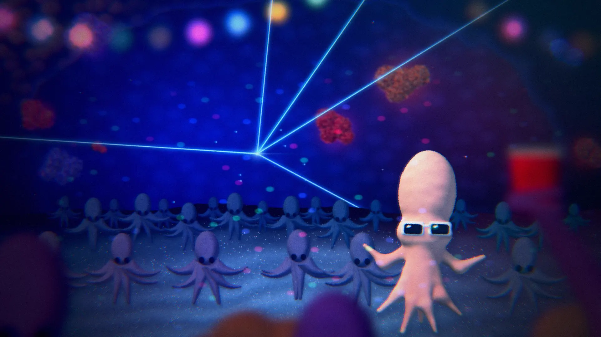
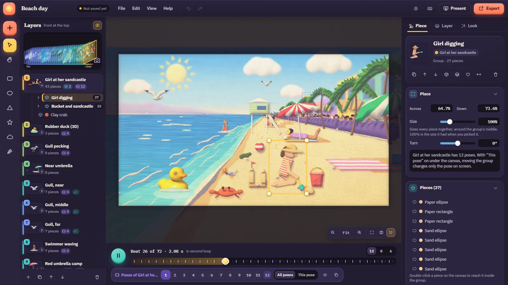
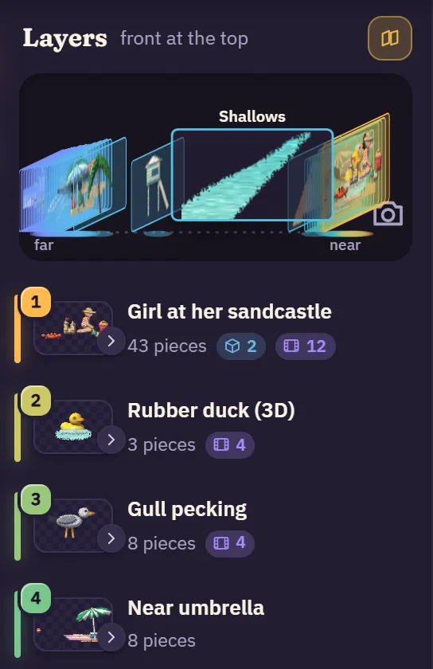
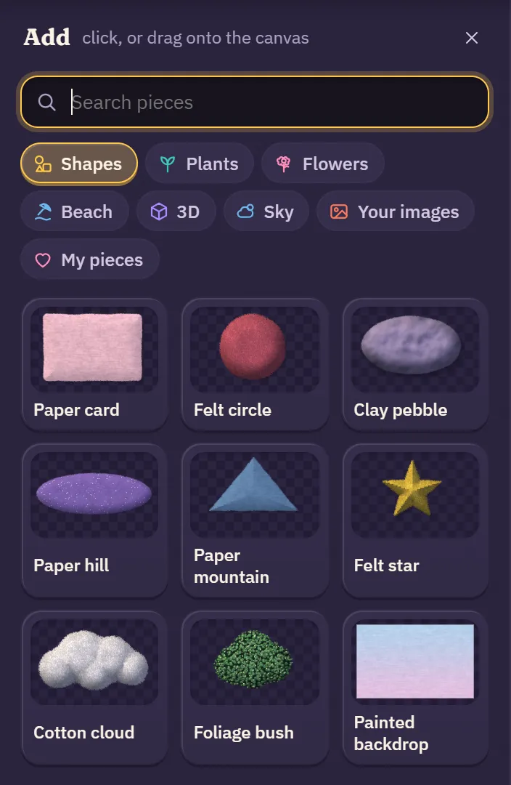
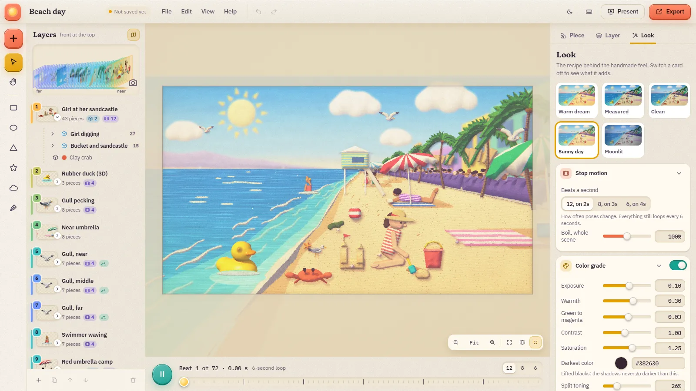
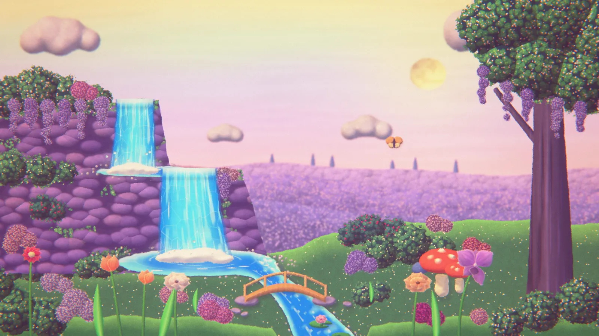
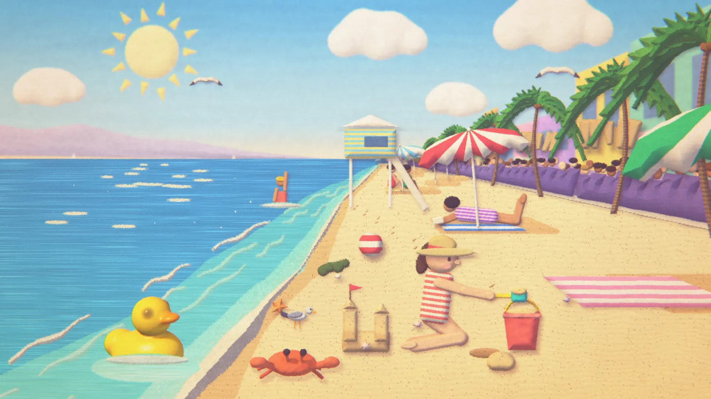

Elaborate Backgrounds Creative tool, UX/UI
A stop-motion wallpaper editor where depth is easy to read
Overview
Elaborate Backgrounds is a browser editor for making your own looping stop-motion wallpapers. A scene is a stack of layers at different depths. Pieces come from a built-in store or are drawn and cut by hand, and a finished loop exports as a still, a video that loops exactly, or a live wallpaper file.
There are no photos and no image-generation models; every picture is drawn by code. It’s a self-directed project and still a work in progress. Nobody but me has used it yet.

From a study to a tool
It started as a study: a real-time recreation of the feel of a looping stop-motion backdrop seen on a podcast set.
That backdrop was a handmade-looking fantasy garden with a waterfall, swaying flowers and a soft, warm, fuzzy filter. I don’t know who made it. Working out how to recreate its feel turned into a recipe: flat layers at different depths, a clock that only ticks 12 times a second like stop-motion, a slight “boil” so edges shimmer as if each frame were handmade, and a stack of film-like effects on top.
Once the look was a recipe, it could be a tool. So I turned the study into an editor where anyone can build their own scene from the same ingredients, with every part of the look as switches and sliders.
A scene can have dozens of layers at different depths. How do you keep track of what sits in front of what?
Making depth readable at a glance
The Beach day sample has 31 layers. In a plain list of names, depth is something you have to remember. I wanted it to be something you can see.
- Numbers. Every layer has a number sticker, and 1 is the front.
- Depth colors. Layers are colored the way haze cools distant hills: blue-violet for far, through cyan and green, to yellow and coral for near. The same color shows up in five places, including the row’s edge, its number and the layer chip on any piece you select.
- A depth view. Above the list, every layer stands as a card on a floor, far on the left and the camera on the right.

The depth view magnifies like a dock
With 31 cards in a panel 250 pixels wide, each one is a sliver. So pointing at the diagram magnifies it around the pointer: the nearest cards spread apart, the far ones fold together, and the card under the pointer turns from its angle to face you, larger, with its name and its pieces. Hovering a row in the list does the same for that layer, and clicking selects it.
To check that every layer could be reached, I had a script sweep the pointer across the diagram in 2 px steps. It reached all 31 Beach day layers, in depth order, without skipping one.
Objects share layers
The first version gave every object a layer of its own, and I didn’t like it. In a drawing program, objects share layers.
So layers now hold groups. Click a grouped piece and the whole group is selected, ready to drag, scale or turn as one. Double-click to reach a single piece inside. Shift-click several pieces and press Ctrl+G to group them. Beach day went from 37 layers to 31, with the girl, her bucket and sandcastle, and the crab sharing the front layer.
Some things still need their own layer. Motion belongs to a layer, so anything that sways, drifts or flies across stays separate. When a merge can’t happen, the editor says why instead of quietly refusing.
The rest of the toolkit
Make your own pieces
Draw with five shape tools or a pen, then pick a material: paper, felt, clay, foliage and more. A photo of a paper shape can become a cut-out with a handmade edge.
Animate pose by pose
Give a layer 2 to 12 poses. Onion skin shows the previous pose faintly, and “Copy previous pose” starts a new one from the last.
Export a loop
A PNG still, an MP4 rendered beat by beat so it loops exactly, or a live wallpaper: one self-contained HTML file that plays the scene full screen.
An animator’s craft table
The interface borrows from the scenes it makes instead of from Photoshop or Illustrator.
The scenes are paper, felt and clay lit from the top left, so the interface is too. Panels are trays with a faint paper grain. Buttons are small raised chips that lift on hover and squish when pressed. The scene sits on a pasteboard with a dot grid, like a cutting mat. Motion is springy and quick, 200 to 400 ms, and all of it stops when reduced motion is turned on.
There are two themes: Studio, a warm dark plum, and Paper, a light cream. Each accent color has one meaning everywhere: sun yellow for selection and focus, coral for the main action, teal for “on”, lilac for animation, pink for your own things and sky blue for information.


Scenes made in the editor
Each sample shows off a different part of the tool, and each one opens in the editor with every piece editable.
Lilac Falls, on the landing page, is built the way stop-motion water is built: the falls are crinkled cellophane with cotton-wool foam, the pools are poured resin with clear ripple rings, and both are swapped frame by frame on twos. Beach day is made only of ordinary editor shapes. Reef Rave, at the top of this page, is an octopus party in an underwater cave, seen from inside the crowd, with out-of-focus partygoers right by the lens.


What the checks caught
Before building more, I wanted the editor checked properly. These are measurements from my own laptop, not claims about real-world use.
A set of 92 scripted checks drives a real browser: drawing, undo, 600 random clicks and keys three times over, saving, exporting, six screen sizes in both themes, accessibility scans and failure cases like blocked storage. The first run passed 62 of 77. After the fixes it passes 87 of 92, and all five failures are one open bug.
- Scripted checks passing, from 62 of 77 on the first run
- 87/92
- Page tests passing in Edge
- 13/13
- Typical frame time for Lilac Falls, editor canvas in a 1600 × 900 window
- 4.3 ms
- Random actions with no errors
- ~1,800
Work could be lost
The browser kept only one autosave, and loading a scene counted as a change. Opening two samples, starting a new scene or opening a file could erase work with no warning.
What changed: every scene is now its own save, and the home page lists them under “Pick up where you left off”. The last second of work now survives closing the page too.
Do the loops really repeat?
Rendering the first beat and the same beat one loop later gives identical pixels, a difference of exactly 0. In an exported MP4, the small differences left come from video compression.
What changed: nothing needed to. The check stays in the suite so it can’t quietly break.
Buttons that are too small
The buttons that expand a layer’s pieces are 18 px wide, and WCAG 2.2 asks for 24 px. On Lilac Falls, 13 of them fall short. It’s the only accessibility problem the scans found.
Still open: this is the one bug behind all five failing checks.
What this doesn’t prove yet
The checks show that it works, not that it’s easy to learn. Firefox, Safari and wallpaper apps are untested, and no one else has used it. These are the questions I’d take to a usability test first:
- Can someone new tell which layer is in front without reading the numbers?
- Do people use the depth view to move between layers, or only the list?
- Does it make sense that swaying and flying things need a layer of their own?
- Does tapping Space to play, while holding Space and dragging pans, feel natural or get in the way?
Credits
Concept, creative direction, art direction and design by Eder Yepez Cuevas. The code was written with help from Claude, Anthropic’s AI coding assistant.